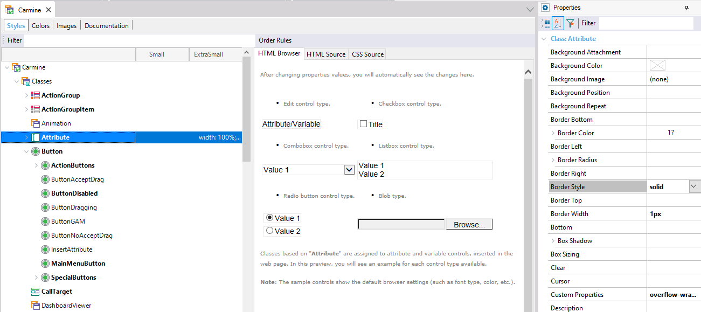

The following is an image of the Themes Editor (the screen shows a hierarchical structure of nodes):

Going down the hierarchical structure you can see, on the left, that there are three main nodes:
- Classes: Generally it contains all the predefined GeneXus classes, from which new classes can derive, and which will be associated to GeneXus controls.
- Custom: It consists of different CSS selectors and their combinations, which are not necessarily classes, but other selectors (such as HTML Tags and custom classes) which cannot be associated with GeneXus controls.
- Fonts: You can add under this node, the specific fonts you will use.
To the right, you have the properties corresponding to each one of the nodes.
In the center, a preview is shown, which is a view of how a control associated with the corresponding class will be viewed in runtime.
|